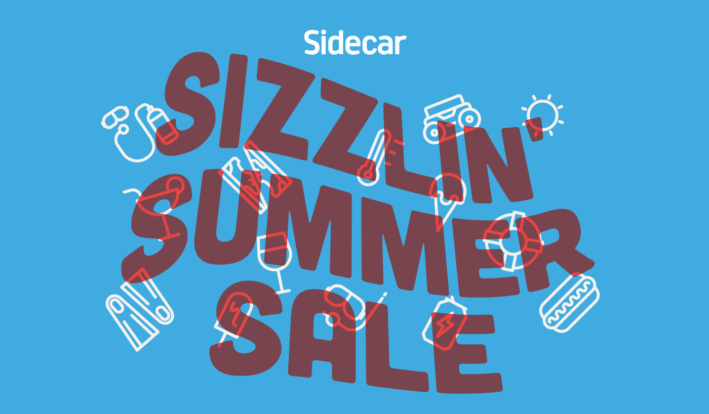
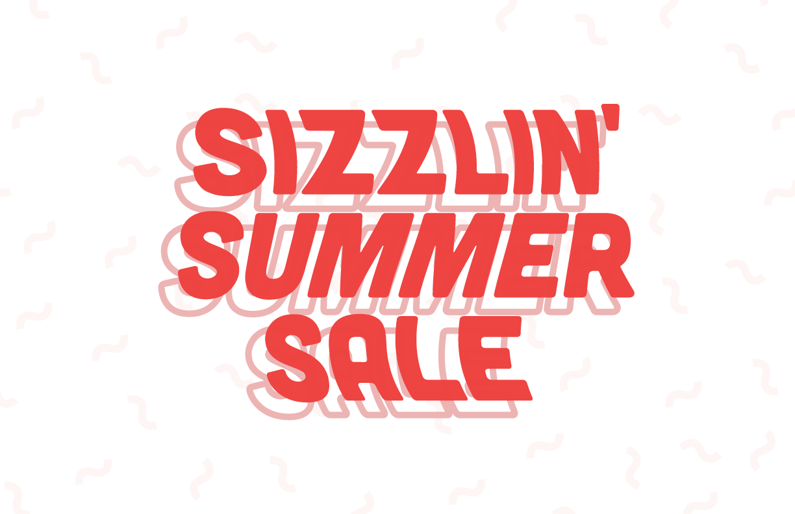

Created for a Sidecar promotional campaign in the summer of 2014, I tried to achieve summer vibes by mimicking the look of underwater type. Commonly seen from a diving board meters above the pool, I love the movement that the water's reflecting ripples gives the tiled type below.
Below are some explorations on type and type treatment that I worked on before landing on the final version seen at the top of this page. Becuase I was inspired by a swimming pool – blue seemed like an obvious choice but the blue was too cool of a color to really give weight to the 'Sizzlin' name.
 Inspired by matches, the version below focused more on the heat and less on the summer aspect of the promotion. While I loved the western-feel to it ultimately it wasn't giving off the groovy vibes I wanted the piece to have. Oh well!